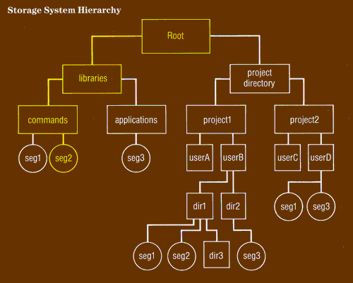
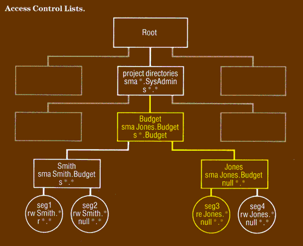
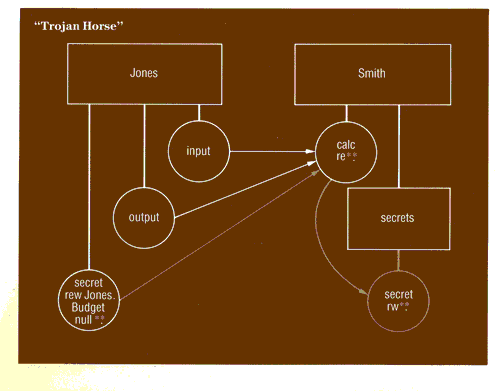
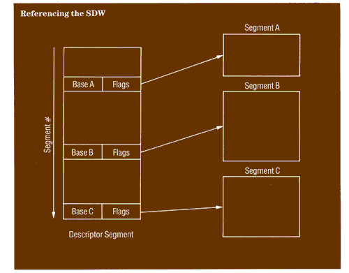
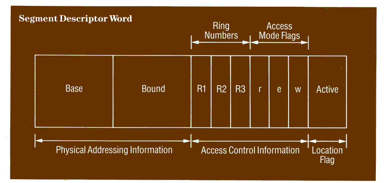
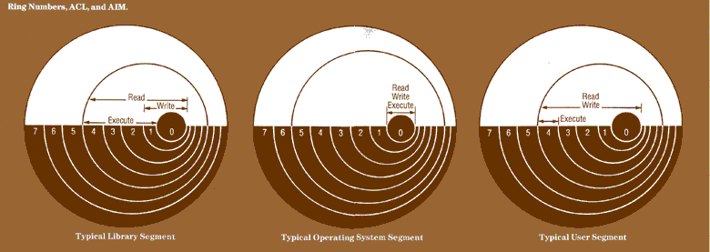
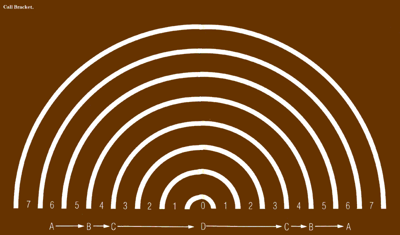
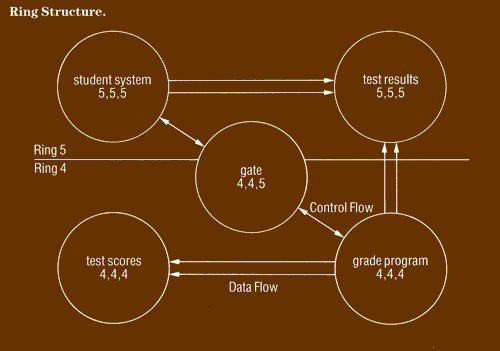

This paper is based on an article by David M. Jordan in the June 1981 issue of Scientific Honeyweller (Vol. 2 No. 2). It was published as Honeywell document GA01.
Computer security is a general term which can be used to describe defenses against everything from wire tapping to sophisticated software attacks, like "Trojan horses" and "trap doors." Data security is concerned with internal rather than external attack, that is, with the mechanisms which prevent users from obtaining unauthorized access to the data stored in the system. The consensus is that Honeywell's Multics system has the best data security of any large, general-purpose computer system available today.
Data security is usually enforced by the specialized software called the operating system, which coordinates and oversees the sharing of the computer's resources, programs and data. On Multics, as on many systems, the first line of defense is a set of tables which lists users and their access rights to data. These tables are scanned by the operating system on each user's reference to a block of data. In theory this is a simple and unbreachable defense. In practice it is often very vulnerable, for three reasons:
-
The hardware architecture may contain exploitable behavior (or misbehavior). For example, the hardware implementation may offer opportunities for trap doors, which can be opened under specific conditions.
-
The software utilization of the table look-up mechanisms may contain exploitable errors.
-
The table mechanism may be completely circumvented by implementation errors in the system's operating software.
Operating systems are prone to error because they are composed of many complex computer programs and because they are repeatedly altered to extend the functions available to the user and patched to correct the problems discovered in the software extensions. The complexity of the system makes it impossible to predict all of the effects of a proposed change with any degree of accuracy, so the effectiveness of the security mechanisms tends to decrease as the number of changes and patches increases.
When Multics was developed, an attempt was made to design a system, including security mechanisms, which could grow without system reorganization. The designers recognized that it would be impossible, at the design stage, to anticipate all the problems which would crop up when the software was written. Therefore, if problems arose as a module of the system was implemented, it, was redesigned, a process which served to reduce the convolution and complexity of the final software system. In addition, provision was made to allow functions to be added to the system as subsystems rather than as modifications of the operating system itself.
Discretionary Access Control
One generic data security mechanism is a table of users and blocks of data. The table defines which users may have access to a given block of data and what kind of access they are allowed. On Multics, the table used to determine access is the Access Control List, or ACL, associated with each block of data, or segment (file), in the system. The security policy enforced by this table is "discretionary" Those who "own" the segment decide who is to have access to it. Another, nondiscretionary mechanism, which enforces military security policy; is also available and is used at Multics locations where security is critical.
The Access Control Lists are built into the file system and are maintained by the secondary storage subsystem of the operating system, which keeps track of the locations of segments in peripheral storage devices and transfers them in and out of main memory as needed. The storage system maintains a hierarchy of segments and directories, which resembles an inverted tree branching out from a single root directory. Each segment under any given directory has a unique name. Thus each segment can be located by a unique search strategy or path name consisting of the series of directories under which it is located and its name. Thus, in Figure 1, "seg2" in directory "commands" has the unique path name: Root>libraries>commands>seg2.

Figure 1. Hierarchical Storage System Structure.
Each segment in the storage system has a unique path name or search strategy, which lists, in turn, each of the directories under which it is located and its name, which is always unique among the segment names stored in the last directory in the sequence. The path name for seg2 in this example is: Root>libraries>commands>seg2. Access control information for each segment is stored with the information about its location in the directory containing the segment. Thus the access information must be scanned when the storage system locates the segment for the user.
The directories are segments containing branches to other segments, which consist of the address of a segment under the directory, and other information about it, such as its ACL. Therefore, the ACL is inextricably linked with the address of the segment. Since it lies on the path to the segment, it must be "found" if the segment is to be found.
The ACL is a list of individual users or user groups and the access modes, such as read access, allowed each user. Individual users are identified by a person I.D., unique among users, and a project I.D. that groups users from the same department or location for accounting and access control purposes. Thus, user Jones of the Budget project would be identified as:
Jones.Budget
Since it is often desirable to specify access to a segment for a class of users rather than for individuals, either part of a user identifier can be replaced by a special character, *, which represents a universal match.
Thus ACL identifiers
Jones.*
and
*.Budget
identify groups of users which include Jones.Budget. The access modes associated with each user identifier can be either null, indicating that the user is not allowed access to the segment, or combinations of the letters "r," "e," and "w," which stand for read, execute, and write.
For example, if user Jones wants to limit read and execute access to users on the Budget project, he might create an ACL like the following:
rew Jones.* re *.Budget null *.*
The default access mode for a user whose I.D. does not match any ACL entry is null, so the final entry in the ACL could have been omitted (Figure 2).

Figure 2. The Access Control Lists.
The ACLs enforce a security policy based on the concept of (nonexclusive) "ownership." Each segment has an Access Control List which gives the access modes allowed users and groups of users. The ACLs are stored in the directory containing the segment and the directories themselves have ACLs, which are stored in the next highest directory. Because of the hierarchical nature of the storage system, users with access to high level directories can force access to subordinate segments by altering, in turn, the ACLs of all the containing directories and that of the segment itself. Thus, in the example, a system administrator with modify access to the project directory could obtain access to one of the segments belonging to Jones, even if Jones had written an ACL for the segment denying him access. In effect, therefore, everyone with modify access to a containing directory "owns" a segment, in the sense that they control it. While modify access to directories close to the root is limited to a few system administrators, the power this confers on them constitutes a security risk.
Access rights to a segment are determined by looking up a user I.D. in a segment's ACL. The identity of the user as far as the system is concerned is established by the user name he provides and is authenticated by a password. When he logs in, each user must provide a valid user I.D., generally his last name or last name and first initial, and a password. He may also specify which project he wishes to log in on. If the I.D. supplied is unknown to the system or the password supplied does not match the stored password for that user LD., he is denied access.
Because user I.D.'s are public information, the security of user passwords is vital and several steps have been taken to help ensure that they are not compromised. For example, the passwords are stored on the system in an encrypted form. The algorithm used to encrypt the passwords is a one-way algorithm; there is no algorithm (other than exhaustive search) for recovering the clear form of the encrypted password.
ACLs are associated with the directories in the storage system hierarchy as well as with the segments. It is important that access to the directories be controlled because the directories contain the ACLs of the directories and segments below them and thus a user with the appropriate access to a directory can change access to any subordinate segments or directories by modifying the ACLs in the directory
Directory ACLs, like segment ACLs, are composed of user identifiers and access modes. The access modes for directories are either null or combinations of the letters "s," "m," and "a," which stand for status, modify, and append. Status access allows a user to list the contents of the directory and to examine most of the storage system attributes, such as ACLs, associated with each entry in the directory. Modify access allows the user to change many of the attributes of an entry, while append access allows a user to create entries in the directory. Just as a segment ACL is stored in the directory which contains the segment, the directory ACL is stored in the next highest directory (closer to the root). Access to the root directory is restricted to the system itself since there is no containing directory for the root directory, which therefore cannot have an ACL.
This hierarchy of control allows system administrators to handle any user directory and allows project administrators to handle any directories or segments within their project. While the system is very practical and flexible, it involves some security risk, since a user can grant access to segments without the authorization or knowledge of the users who originally set the ACLs for the segments. The ACL mechanism enforces a security policy based on the concept of ownership. But the hierarchical organization of the storage system makes the definition of ownership very broad. In effect, any user who has modify access to any directory in the storage system hierarchy which contains a segment, owns the segment. In other words, it is not possible to ensure exclusive ownership. In fact, one user could potentially alter the ACL to a segment to deny access to the user under whose directory it is listed.
However, the extended access control system used on some Multics systems, AIM, or Access Isolation Mechanism, to a large extent solves the security problem posed by users with access to high-level directories by increasing the number of attributes of each segment and each user, and by enforcing a stricter set of rules for matches between the two.
Nondiscretionary Access Control.
The Discretionary Access Control mechanism assumes that each user can be trusted to protect sensitive data. AIM assumes that the user may release sensitive data either by accident or intent, and is designed to prevent such releases. AIM was implemented in response to a Pentagon request for a mechanism which would enforce military security policy. On systems which use both the ACL and AIM mechanisms, the user's effective access to a segment is determined by the most restrictive of the two.
AIM determines access on the basis of the classification of the segment, and the clearance and need-to-know of the user. Two types of AIM classification information are maintained for each segment in the storage system:
-
a classification level, a number from 0 (least sensitive) to 7 (most sensitive)
-
a set of up to 18 categories
to which the information in the segment belongs The categorization of segments (and of users) enforces a policy of granting access only when there is a need-to-know, and helps to prevent users from deducing data stored at a higher clearance level from combinations of data at their clearance level. A company might classify information according to the levels and categories listed below:
| Security Level | Category Description |
|---|---|
|
0 Public 1 Confidential 2 Proprietary 3 Secret |
0 None 1 Budget 2 Payroll 3 Engineering 4 Assembly 5 Distribution 6 Marketing |
Marketing data for a well established product, for example, might be considered confidential information (level 1) in the marketing category (6). On the other hand, a budgeting report for an engineering project likely to affect company operations for the next decade might be classified as secret information (level 3) within both the budget and engineering categories (1,3).
AIM clearance information, consisting of both a clearance level and a category set, is also maintained for each active user of the system. System tables maintain lists of maximum clearance values for each user and project and the user may specify any clearance level, up to his maximum authorization, when logging in.
Access to any given segment is calculated at the same time that the ACL is checked. The user's clearance (A) is compared to the segment's classification (B) to determine the user's effective access to a segment. The clearance and classification can have one of four different. relationships:
-
A equals B if:
-
The level of A equals the level of B, and
-
The category set of A is identical to the category set of B.
-
-
A is greater than B if:
-
The level of A is greater than or equal to the level of B, and
-
The category set of B is a subset of the category set of A or is identical to the category set of A, and
-
A is not equal to B (according to #1 above).
-
-
A is less than B if B is greater than A (according to #2 above).
-
A is "isolated" from B if none of the above apply.
When a user references a segment, two tests determine what, if any, access will be allowed. First, read and execute access require that the user's clearance be greater than or equal to the segment's classification. Thus, a user may read or execute any segment at or below his current clearance, but may not read or execute any segment at a higher or isolated classification. In other words, he may "read down" but not "read up."
The second test is for write access. For the user to have write access, his clearance must exactly equal the segment's classification. This prevents the user from declassifying information by "writing down" and altering more highly classified information by "writing up." The write access rules, in combination with the read/execute rules allow information to flow only within a level or to a higher level of classification.
One of the major objectives of the Access Isolation Mechanism is to deal effectively with the "Trojan horse" problem (Figure 3). A Trojan horse program is generally a program which serves a useful function and is likely to be referenced by a wide variety of users, but which also contains additional code, completely unrelated to the documented function and of which the user is unaware. The additional code might, for example, search the storage system for data to which that user has access, but which is not available to the author of the program and, on finding such data, copy it to a different location in the storage system hierarchy. If user A has written the Trojan horse program to steal data from user B, user A can give user B access to create new segments somewhere in a part of the hierarchy which is under user A's control. Each time the program is invoked, it performs its documented function and then checks to see if it has been referenced by user B. If so, it examines user B's segments and copies those which may be of interest into segments accessible to user A. Not only does such a program cause data to be released, but it has no obvious side effects, so user B may never be aware that his data has been compromised. Since the nondiscretionary access controls prevent user B from "writing down," it effectively blocks a Trojan horse program. As a result, user B can execute any program from any source with confidence that it will not cause data to be released to a lower classification level.

Figure 3. The AIM Mechanism.
The AIM mechanism of access control is more restrictive than the ACL mechanism. The AIM rules, which define access rights on the basis of the match between a segment's classification and a user's clearance, ensure that information cannot flow from a higher to a lower clearance level, even if the ACLs on the segment containing the information would allow this. As a result, AIM blocks attempts to obtain data illicitly by means of "Trojan horse" code. A Trojan horse program is a program which serves some useful function and is therefore likely to be used by a wide variety of users, but which also contains undocumented code which uses the access rights of the user who has called the program to obtain information for the program's author. For example, it might copy segments to which the user has access but the author does not into segments beneath the author's directory. Since AIM does not permit information to be read or written to a lower clearance level or across categories, it effectively blocks this kind of attack on data security.
In addition to blocking attempts to pass information directly, AIM blocks attempts to pass information indirectly from a higher to a lower clearance level. For example, segment attributes, such as segment names, could provide a user with information. To block this information path, there are AIM rules for access to directories parallel to the AIM rules for access to segments. Each directory has an AIM classification; those closer to the root have lower classifications than those farther from the root. A user can examine the contents of a directory only if his clearance is greater than or equal to the directory's classification. In addition, the AIM rules specify that a user cannot manipulate the entries in a directory unless his clearance is equal to the directory's classification. This effectively blocks the attempts to pass information to lower clearance levels by means of data maintained by the storage system.
How Access Rights are Enforced
The first time a user process, the surrogate for the user on the system, requests access to a segment, the segment is "unknown" to the process in the sense that it does not know the physical location of the segment in the storage system. To make it known, it supplies the segment's path name, its logical location, to the storage control subsystem. The subsystem records the path name and adds an entry, a Segment Descriptor Word (SDW) to a special user segment called the descriptor segment and returns a segment number, which is the location of the SDW in the descriptor segment, to the user program (Figure 4). The user may then reference the segment by its segment number. The first time the user program refers to a segment, a flag in the SDW indicates that the segment is not in main memory. As a result, the user program is interrupted until the storage system locates the segment (by following the path name) and loads it into main memory. The SDW includes fields for the segment's physical address in main memory and for access control information. In the course of following the path name, the storage system examines the access control information for the segment, stored in the directory which contains the segment, and fills in the appropriate SDW access control fields. There may be several SDWs for the segment if several users have referred to it; the address fields in the SDWs will be the same, but the access fields will vary with the user. For each user, data sharing is accomplished by the common address fields; security is enforced by a specific access field for each user in the SDW. After supplying the program with the segment number, the storage system restarts the user program at the point of interruption and, if the access control settings allow it, the reference continues to completion. The hardware mediates every subsequent reference to the segment, examining the SDW to determine whether the reference is legitimate, but subsequent references need not interrupt the user program (Figure 5).

Figure 4. The Segment Descriptor Word.
The Segment Descriptor Word (SDW) contains fields for the physical address of the segment in main memory and for access control information. There will be several SDWs for a segment if several users are referring to it; the access control fields in these SDWs will have different settings.
It might seem unnecessarily repetitive to verify access on each reference to the segment and that it would be sufficient to have the operating system verify only the first access to the segment. But the fact that the SDW is checked on every reference to the segment allows changes of the access rights for the segment to take effect immediately, rather than after the segment is no longer in use. If the segment is in use when access rights to it are changed, the storage system records the change and sets the flag in any SDWs which reference the segment to indicate that the segment is not in main memory. The next time the user attempts to reference the segment, his program will be interrupted and his access to the segment will be recalculated.

Figure 5. Referencing the SDW.
No user ever has direct access to a segment in the Multics storage system. The user actually references the SDW for the segment, which leads to the physical address of the segment, and is stored in a special segment the system creates for each user when he logs in, called the descriptor segment. As a result of this arrangement, every reference to a segment is mediated by the hardware. The hardware examines the SDW on every reference by every computer instruction to a segment to determine its address and checks at the same time to see that the settings of the access fields in the SDW allow access.
Protecting the Data Security Mechanisms
While the data security mechanisms on Multics are more difficult to subvert than most because they are enforced by the hardware, much of the data security is implemented in software. The software is stored as information in the system, and is, therefore, potentially alterable. To protect the software mechanisms, the operating system must be protected from accidental or intentional user modifications. Intentional modifications of the operating system, called "trap doors," are activated by a combination of inputs known only to the author of the trap door. They can be used to cause the release of information or to interrupt or interfere with system operation. The problem of defending the security mechanism in the operating system is compounded by the fact that the users must frequently call on the operating system to execute some function on their behalf, and therefore the operating system, including the security mechanism, cannot simply be inaccessible. Instead, the distinction must be made between legitimate and illegitimate access to operating system information.
The discretionary and non-discretionary systems of access control cannot be used to help solve this problem because they either grant or deny access to the entire process. As a result, it is not possible to restrict what the process does with the data to which it has access, beyond the broad restrictions of reading, writing, and executing. This poses a fundamental problem since it means that users could subvert the ACL and AIM security mechanisms by tampering with the "make known" procedure itself. For example, if there were no way to prevent a user from overwriting the SDWs in his segment to his own advantage, the system would be vulnerable. However, the Multics "ring structure" places limitations on access based not only on the user's identity but also on the program he is executing, allowing him to reference segments to which the ACL and AIM mechanisms give him access only in some sequences.

Figure 6. The Ring Numbers, ACL, and AIM.
The ring numbers, the ACL, and AIM classifications all define access to segments. Each mechanism defines potential access and a user's effective access is that permitted by all three. The ordered set of three ring numbers associated with each segment defines four access brackets. A user has read, write, or execute access to a segment only if his current ring number is within the appropriate ring bracket. There is, however, a special case; if a user attempts to transfer to a segment (to execute it) and is not within the execute bracket, but is within the call bracket, he is granted execute access and his ring number is temporarily changed to the highest ring number in the segment's execute bracket. Typical user segments have wide write and read brackets, and execute brackets including rings to which most users have access. (The execute bracket is defined by the difference between the write and read brackets and therefore, if these cover similar ranges, it cannot cover a wide range of rings.) Typical library segments have small write brackets to limit the circumstances under which users can modify them, but large read and, therefore, large execute brackets, because they must be read or executed by many users under a wide variety of circumstances. Typical operating system segments have small read, write, and execute brackets, and null call brackets. A few, however, have large call brackets. These make the others accessible to a wide variety of users, but accessible only under carefully controlled circumstances.
The Ring Mechanism. There are eight rings (0 to 7) on Multics (Figure 6). The lower the ring number, the more privilege is conferred on the executing program. A special hardware register keeps track of the ring number in which each user process is executing, and the ring number increases or decreases (within limits set for each user) as the process references different segments. On each reference to a new segment, the current execution ring of the process is compared to an ordered set of three ring numbers associated with the segment. The ring numbers are stored in the branch to the segment in the directories containing it, and are entered in the SDW for the segment in the user's descriptor segment during the "make known" procedure. The numbers determine four ring brackets, known as the read, write, execute, and call brackets. If the ring numbers are R1, R2, and R3, the four access brackets would be:
| Current Execution Ring | Access Bracket |
|---|---|
| 0 to R1 | Write Bracket |
| 0 too R2 | Read Bracket |
| R1 to R2 | Execute Bracket |
| R2+1 to R3 | Call Bracket |
The effect of the read and write brackets on user access is relatively straightforward. When a user requests access to a new segment, whether or not his request is granted is determined by both the ACL and AIM mechanisms and the ring brackets of the segment. The way the ACL, AIM, and ring mechanisms work together is that each mechanism defines potential access, but effective access is defined by all three in combination. The user has access to a segment if he is permitted the kind of access he requests by the ACL and AIM mechanisms and his process is executing in a
ring within the appropriate ring bracket. Typically, the read and write brackets of user segments encompass a wide range of rings, and generally a user will be denied access by the ACL or AIM settings in the segment's SDW rather than because he is outside the appropriate ring bracket.
The power of the ring mechanism lies in the execute and call brackets. Assume that the ACL and AIM mechanisms give a user read and execute access to a segment. If the user process is executing in a ring within the execute bracket of a segment when it attempts to transfer (execute) to the segment, it is granted access and its current ring number remains the same. If it is not within the execute bracket, but it is within the call bracket of the segment, access is granted and the current ring number is temporarily changed to that of the highest ring number in the segment's execute bracket (and automatically reverts to its original value when the process returns to the calling program). If the process is in a ring outside the call bracket of a segment when it requests access, access is denied (even if the ACL and AIM mechanisms allow it).
The call bracket allows controlled changes in privilege, making it possible for operating system programs to execute on behalf of users, but preventing attempts to misuse the temporary privilege they confer. Segments with non-null call brackets are called gates, because user processes can pass from outer to inner ring segments through them, and only through them. The manner in which the gates function is best illustrated with an example (Figure 7). Suppose a user process executing in ring 6 references in turn segments A, B, C, and D, which have, respectively, ring numbers [6,6,6J, [4,4,6] [2,5,6] and [0,0,4] and that the AIM and ACL mechanisms allow the process execute access to all these segments. In the course of executing segment A, the process calls segment B. Since it is in a ring outside the execute bracket for B, but within its call bracket, it is granted access to B and its current ring number becomes 4. In the course of executing segment B, it calls segment C. Since it is within the execute bracket for segment C, it is granted access and its ring number remains the same. In the course of executing segment C, it calls segment D. Since it is within the call bracket of segment D,it is granted access, and its current ring number becomes 0. When it finishes executing D, it is automatically returned first to segment C in ring 4, then to segment B in ring 4, and then to segment A in the ring in which it began, ring 6. Note that the process cannot call A, B, or C, while executing with privileged status in ring 0, that it cannot call segment D from segment A, and that it cannot skip the intermediate gate, B, and still reach the ring 0 segment D by calling C from A and D from C. This example illustrates how the ring mechanism gives administrators the ability to determine the circumstances under which a sequence of segments can be called, in other words, gives them the ability to determine to some extent which programs the user can execute.

Figure 7. The Call Bracket.
The call bracket, defined by the ring numbers associated with each segment, can be used to restrict the sequence in which a user process can execute segments, and therefore, in effect, the programs a user can write. In this example, the user's process, located at first in ring 6, references in turn segments A, B, C, and D, with ring numbers [6,6,6], [4,4,6], [2,5,6] and [0,0,4]. When the process calls segment B, its ring number changes to 4, the highest and only ring number in segment B's execute bracket. When it calls segment C from B, its ring number remains the same, but when it calls D from C, its ring number changes temporarily to 0. Because of the ring numbers on these segments, the user process cannot pass from segment A directly to segment D. It must pass through segment B, called a gate, because it has a non-null call bracket, to reach segment D. The ACL and AIM settings on gates can be used to control access to inner ring programs and data, making it much easier to protect them from misuse. This structure also protects data in outer rings from misuse by a process temporarily executing with ring 0 privileges since it is generally not possible to read or write to outer ring segments from ring 0. Note also that the user's current ring number reverts to its original value when a called segment has finished executing. In the example, the ring number would revert first to 4, after segment D had finished executing, and then to 6, after segment B had finished executing; the privilege conferred by the call is conferred temporarily.
To illustrate how the ring mechanism can be used to protect the data security mechanisms, a level of complexity must be added to the example. Suppose that the ACL and AIM mechanisms allow the process read and write access to segment x, which has ring numbers [0,7,7]. When the process is executing segments A, B, and C, it can read segment x, but cannot write to it. It can write to segment x only when it is executing segment D. Now suppose that segment D is the "make known" procedure, and that segment x is the user's descriptor segment* The user process can read the descriptor segment no matter which ring it is in, as it must in order to reference any segment. However, even though it has write access to the descriptor segment, it can write to this segment only when it is executing in ring 0. This means that the user can write to his own descriptor segment only in the course of executing the "make known" procedure or some other operating system segment. Therefore the ring mechanism protects the ACL and AIM mechanisms themselves from attack. The ring mechanism protects itself from attack; segment ring numbers can only be changed by the operating system and the operating system checks every attempt to modify ring numbers to help ensure that it is legitimate.
*This example is not accurate. In fact, the descriptor segments cannot be read or written to by users executing in rings outside of ring 0, and are accessible only to the operating system and only through a special hardware register. But the example does accurately reflect the manner in which the ring mechanism is used to protect the "make known" procedure on which the other security mechanisms depend.
In addition to protecting the operating system, the ring mechanism is used to protect user subsystems (Figure 8). For example, a teacher could restrict his students to ring 5 by asking a system administrator to allow users on the teacher's project to log in only in ring 5. He might then write a gate segment with ring numbers [4,4,5] and an ACL granting execute access to all users on his project, and a gradebook segment with ring numbers [4,4,4] and an ACL granting write access to all users on his project. When the students finished homework problems in a segment in ring 5, they could call the teacher's gate into ring 4. The gate segment would examine the student's work, store a grade on behalf of the student in the gradebook segment, and return to the student in ring 5. Because the students would have access to the gradebook segment only through the gate, they would not be able to examine or modify the grades. The teacher, who could log on in ring 4, however, would.

Figure 8. The Ring Structure.
The ring structure is used to set up protected user subsystems, in addition to protecting operating systems segments. For example, a teacher could restrict his students to ring 5 but allow them access to a gate into ring 4. When the students finished homework problems, they would call the gate segment, which would examine their work, entering a grade on their behalf in another segment in ring 4. Since they would have no access to the grade segment except through this particular gate, they would not be able to examine or modify the grades.
Conclusion
Multics data security is effective because there are few, if any, errors in its software and because it is enforced, in part, by the unmodifiable hardware. Data security mechanisms, no matter how ingenious, are only as good as the software and hardware on which they depend. It is generally acknowledged that to date Multics offers the highest level of data security available.
© Honeywell Information Systems Inc., 1983